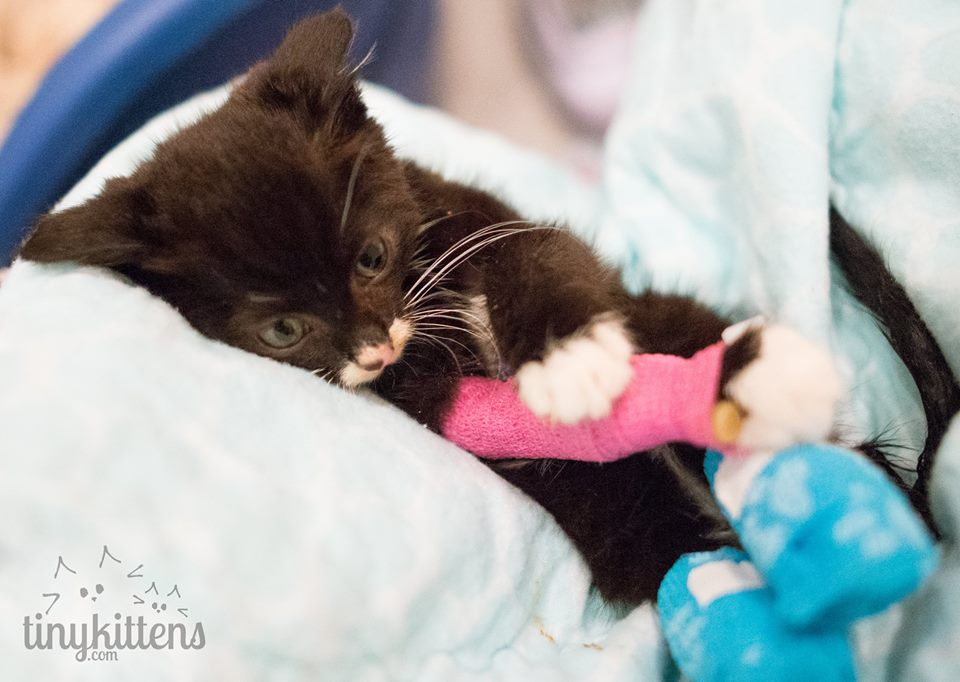
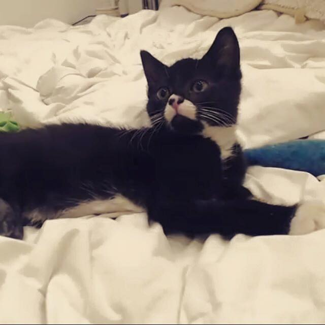
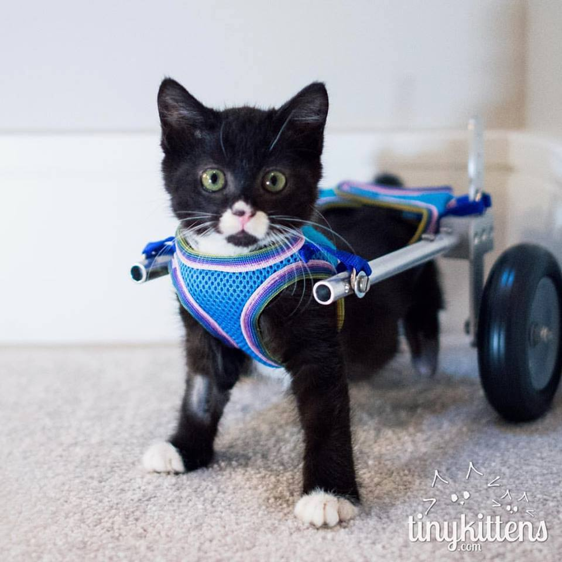
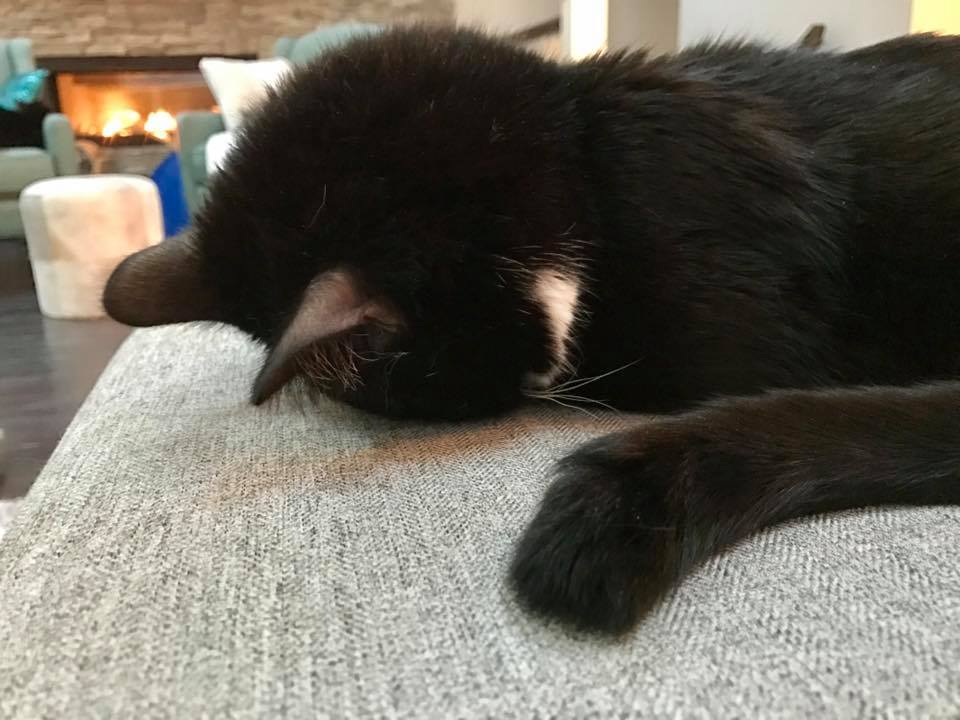

A Tribute to PuffPuff
aka Cassidy
History
Achievements
- Cassidy was rescued as a kitten from a forest feral colony.
- At nine weeks old, he was already missing about half of each of his rear legs.
- It's theorized that his mother too aggressively groomed him when removing him from the amniotic sac and bit off his tiny legs.
- Shelly of TinyKittens, a rescue organization that does TNR (Trap/Neuter/Release) and adoptions, was quickly won over by his personality.
- He was first taught to walk by being supported by hand under the belly, then using an improvised harness. Finally, he graduated to his very own wheelchair.
- Cassidy now lives with Shelly full-time. He's a "foster failure".
- Has learned to scoot on his rear using his front legs.
- Can wrestle like a champ.
- Mastered Roomba-riding, level 4.
- No longer needs a wheelchair to get around.
- Cassidy's current best friend is Aura, or "Auracuda", a kitten born with a severe cleft palate.
- One of his wheelchairs was designed, made, and donated by two high school students using a 3-D printer.
- View Cassidy's first steps on TinyKittens' Facebook page.
Fun Facts

shortly after rescue

hamming it up

learning to walk

classic faceplant
More information about Cassidy: